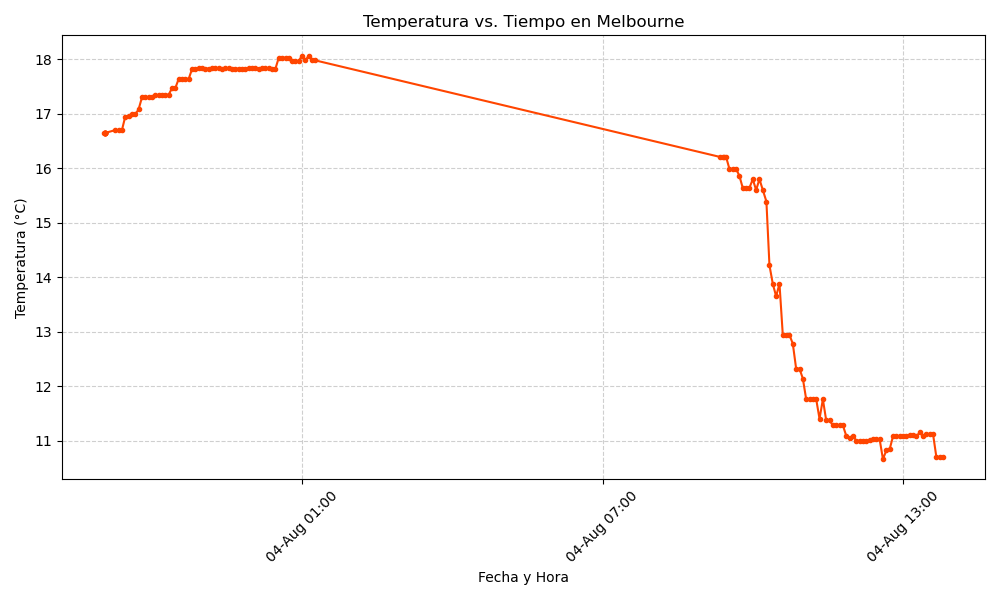
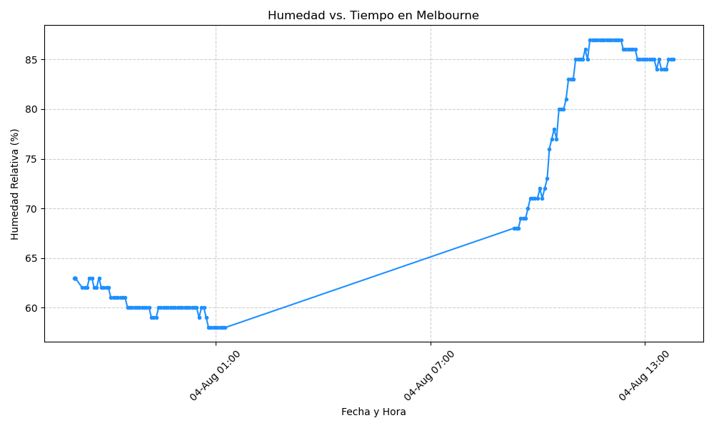
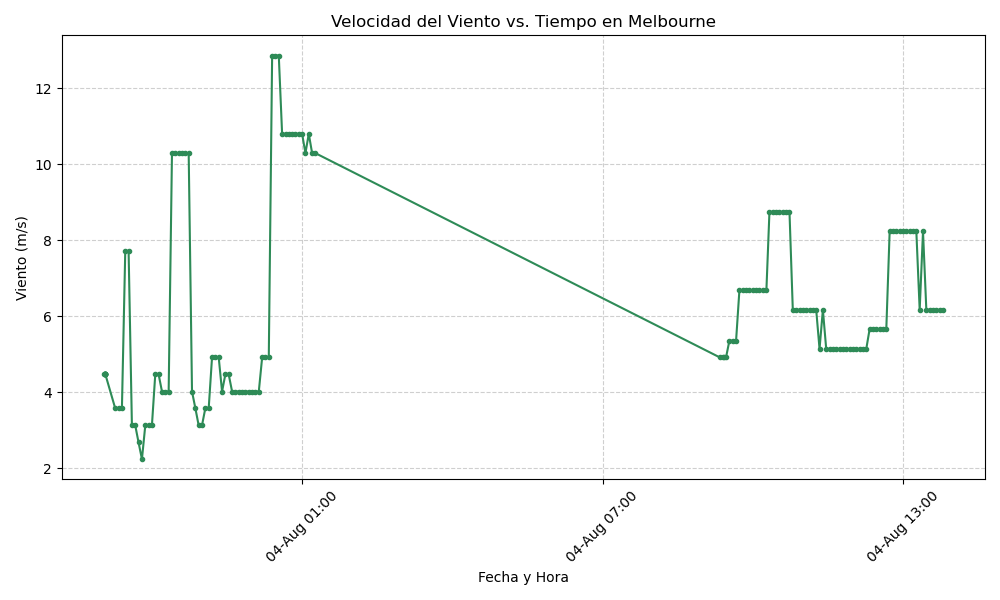

Proyecto ICCD332 Arquitectura de Computadores
Índice
1. City Weather APP
1.1. Conocimientos adquiridos:
- Conocimientos de sistema operativo Linux
- Conocimientos de Emacs/Jupyter
- Configuración de Entorno para Data Science con Mamba/Anaconda
- Literate Programming
1.2. Estructura del proyecto
Estructura final de las carpetas de nuestro proyecto:
.
├── CityTemperatureAnalysis1.ipynb
├── CityTemperatureAnalysis1.ipynb:Zone.Identifier
├── Cohete.zip:Zone.Identifier
├── LICENSE
├── README.md
├── climaMelbourne.csv
├── get-weather.sh
├── get-weather.sh:Zone.Identifier
├── get-weather.sh~
├── ini.el_De_Emergencia
│ └── init.el
├── init.el:Zone.Identifier
├── main.py
├── main.py:Zone.Identifier
├── output.log
└── weather-site
├── Org-Website.org
├── Org-Website.org:Zone.Identifier
├── build-site.el
├── build.sh
├── content
│ ├── climaMelbourne.csv
│ ├── climaMelbourne.csv:Zone.Identifier
│ ├── images
│ │ ├── humidity_melbourne.png
│ │ ├── temperature_melbourne.png
│ │ └── wind_melbourne.png
│ ├── index.org
│ ├── index.org:Zone.Identifier
│ ├── index.org~
│ ├── index.pdf
│ └── index.tex
└── public
├── images
│ ├── humidity_melbourne.png
│ ├── temperature_melbourne.png
│ └── wind_melbourne.png
└── index.html
7 directories, 32 files
2. Formulación del Problema y Objetivos
Problema: Se desea realizar un registro climatológico de una ciudad \(\mathcal{C}\). Para esto, escriba un script de Python/Java que permita obtener datos climatológicos desde el API de openweathermap. El API hace uso de los valores de latitud \(x\) y longitud \(y\) de la ciudad \(\mathcal{C}\) para devolver los valores actuales a un tiempo \(t\).
3. Metodología y Herramientas
El proyecto se desarrolló siguiendo estos pasos:
- Obtención de Credenciales: Se generó una clave de API gratuita en el portal de OpenWeatherMap.
- Desarrollo del Script: Se codificó el script main.py para gestionar las solicitudes al API y el almacenamiento de datos
- Automatización: Se configuró el entorno de ejecución con el archivo
get-weather.shy se programó su ejecución con Crontab - Análisis de Datos: Se utilizaron las librerías Pandas y Matplotlib para procesar y visualizar la información.
Las herramientas clave utilizadas fueron:
- Lenguaje de Programación: Python 3
- Librerías: Requests, Pandas, Matplotlib.
- Entorno: Mamba/Conda sobre Linux (WSL)
- Automatización: Shell scripting y Crontab
- Documentación: Emacs Org Mode
4. Desarrollo e Implementación
4.1. Script de Python (main.py)
El corazón del proyecto es un script de Python que realiza tres tareas principales:
- Consulta al API: Llama al endpoint de OpenWeatherMap para obtener datos
- Verificación de Alertas: Revisa los datos recibidos para detectar condiciones climáticas extremas
- Escritura en CSV: Almacena los datos relevantes en un archivo
climaMelbourne.csv, añadiendo una nueva fila en cada ejecución sin borrar las anteriores
import csv import datetime import requests LAT = -37.813061 LONGITUDE = 144.944214 API_KEY = "d342e18efa48c85976dbaa3493b34dd4" FILE_NAME = "climaMelbourne.csv" BASE_URL = "http://api.openweathermap.org/data/2.5/weather" # https://iabigdata-soka-4ae9e223e32444ac5ae3d78afbd55fd9aa6da1c19d9679bf.gitlab.io/post/2024-06-06-pia_openweathermap_ex/#:~:text=Este%20sistema%20consulta%20la%20API,clim%C3%A1ticos%20de%20diferentes%20ubicaciones%20y def get_weather(lat, lon): url = f"http://api.openweathermap.org/data/2.5/weather?lat={lat}&lon={lon}&appid={API_KEY}&units=metric&lang=es" try: response = requests.get(url) response.raise_for_status() return response.json() except Exception as e: print("Error al obtener clima:", e) return None def verificar_alertas(data): alertas = [] # Lista para almacenar alertas # Verifica si la temperatura supera los 35°C if data["main"]["temp"] > 35: alertas.append("Alerta de calor extremo") # Verifica si la velocidad del viento supera los 20 m/s if data["wind"]["speed"] > 20: alertas.append("Alerta de viento fuerte") # Segun entendi pidio para eso, estaba en el json de la pagina para esas horas # Verifica si hay datos de lluvia """if "rain" in data and ("1h" in data["rain"]): alertas.append("Alerta de lluvia")""" if "rain" in data and data["rain"].get("1h", 0) > 0: alertas.append("Alerta de lluvia") # Verificar nieve """if "snow" in data and ("1h" in data["snow"]): alertas.append("Alerta de nieve")""" if "snow" in data and data["snow"].get("1h", 0) > 0: alertas.append("Alerta de nieve") return alertas # https://www.geeksforgeeks.org/python/python-find-current-weather-of-any-city-using-openweathermap-api/ def writeCSV(data, alertas): # Encabezados para el archivo CSV campos = [ "ciudad", "lat", "lon", "temp", "humedad", "viento", "description", "lluvia", "nieve", "fecha", "alertas", ] # Crear archivo con encabezado si aún no existe try: with open(FILE_NAME, mode="x", newline="") as file: writer = csv.writer(file) writer.writerow(campos) except FileExistsError: pass # Agregar los datos y alertas en una nueva fila del archivo with open(FILE_NAME, mode="a", newline="") as file: writer = csv.writer(file) writer.writerow( [ data["name"], LAT, LONGITUDE, data["main"]["temp"], data["main"]["humidity"], data["wind"]["speed"], data["weather"][0]["description"], data.get("rain", {}).get("1h", 0), data.get("snow", {}).get("1h", 0), datetime.datetime.now().strftime("%Y-%m-%d %H:%M:%S"), "; ".join(alertas), ] ) def main(): print("===== Clima Melbourne =====") melbourne_weather = get_weather(LAT, LONGITUDE) if melbourne_weather and melbourne_weather.get("cod") == 200: alertas = verificar_alertas(melbourne_weather) writeCSV(melbourne_weather, alertas) print(f"Datos guardados para {melbourne_weather['name']}") if alertas: print("Alertas activadas:", ", ".join(alertas)) else: print("Error: Ciudad no disponible o API KEY inválida") if __name__ == "__main__": main()
4.2. Script de Automatización (get-weather.sh)
Para asegurar que el script de Python se ejecute en el entorno de Conda correcto, creamos un script de shell. Este script activa el entorno iccd332 y luego ejecuta main.py.
===== Clima Melbourne ===== Datos guardados para Melbourne
Para darle los respectivos permisos de ejecución al archivo se usó:
4.3. Configuración de Crontab
La automatización final se logra con crontab, el programador de tareas de Linux
Se configuró una tarea para ejecutar get-weather.sh cada 4 minutos.
La salida y los errores se redirigen al archivo output.log para su posterior revisión
Para configurar se utiliza el comando:
verificamos si se guardó con el comando:
*/4 * * * * cd /home/iccd332/org-ProyectoFinal && ./get-weather.sh >> output.log 2>&1
Cada asterisco de: * /4 * * * * Representa:
- Minutos (en este caso 4)
- hora
- día del mes
- mes
- día de la semana
- mes
- día del mes
- hora
cd /home/iccd332/org-ProyectoFinal && ./get-weather.sh
se moverá en el directorio y ejecutará el archivo get-weather.sh
>> output.log 2>&
Se encarga de guardar toda salida que de el programa en el archivo output.log
Finalmente, hacemos los cambios en el sitio web con:
y lo mostramos con:
5. Análisis y Visualización de Resultados
5.1. Carga de Datos y Muestra
Primero, cargamos el archivo climaMelbourne.csv en un DataFrame de Pandas para facilitar su manipulación.
import pandas as pd # Lectura del archivo CSV de Melbourne con la ruta absoluta df = pd.read_csv('/home/iccd332/org-ProyectoFinal/climaMelbourne.csv') # Se imprime la estructura del DataFrame (filas x columnas) print(df.shape)
(139, 11)
A continuación, mostramos una muestra aleatoria de 10 registros para observar la estructura y variedad de los datos.
# --- INSTRUCCIÓN --- from tabulate import tabulate sample_df = df.sample(10) org_table_string = tabulate(sample_df, headers='keys', tablefmt='orgtbl') # Guardar la tabla formateada en un archivo temporal with open("/tmp/org_table.txt", "w") as f: f.write(org_table_string)
# Ejecuto un archivo temporal creado con los datos del DataFrame cat /tmp/org_table.txt
| ciudad | lat | lon | temp | humedad | viento | description | lluvia | nieve | fecha | alertas | |
|---|---|---|---|---|---|---|---|---|---|---|---|
| 71 | Melbourne | -37.8131 | 144.944 | 16.21 | 68 | 4.92 | nubes dispersas | 0 | 0 | 2025-08-04 09:24:03 | nan |
| 7 | Melbourne | -37.8131 | 144.944 | 16.65 | 63 | 4.47 | muy nuboso | 0 | 0 | 2025-08-03 21:04:17 | nan |
| 103 | Melbourne | -37.8131 | 144.944 | 11.37 | 87 | 5.14 | chubasco de ligera intensidad | 3.58 | 0 | 2025-08-04 11:28:04 | Alerta de lluvia |
| 92 | Melbourne | -37.8131 | 144.944 | 12.94 | 80 | 8.75 | lluvia ligera | 0.56 | 0 | 2025-08-04 10:44:03 | Alerta de lluvia |
| 84 | Melbourne | -37.8131 | 144.944 | 15.6 | 72 | 6.69 | lluvia ligera | 0.13 | 0 | 2025-08-04 10:12:06 | Alerta de lluvia |
| 61 | Melbourne | -37.8131 | 144.944 | 18.03 | 59 | 10.8 | muy nuboso | 0 | 0 | 2025-08-04 00:44:06 | nan |
| 17 | Melbourne | -37.8131 | 144.944 | 17.3 | 62 | 2.24 | muy nuboso | 0 | 0 | 2025-08-03 21:48:07 | nan |
| 86 | Melbourne | -37.8131 | 144.944 | 14.22 | 76 | 8.75 | lluvia ligera | 0.18 | 0 | 2025-08-04 10:20:03 | Alerta de lluvia |
| 79 | Melbourne | -37.8131 | 144.944 | 15.64 | 71 | 6.69 | nubes | 0 | 0 | 2025-08-04 09:52:04 | nan |
| 77 | Melbourne | -37.8131 | 144.944 | 15.86 | 70 | 6.69 | nubes | 0 | 0 | 2025-08-04 09:44:04 | nan |
5.2. Gráfica de Temperatura vs. Tiempo
Esta gráfica muestra la fluctuación de la temperatura a lo largo del tiempo.
import matplotlib.pyplot as plt import matplotlib.dates as mdates import pandas as pd df['fecha'] = pd.to_datetime(df['fecha']) # Define el tamaño de la figura de salida fig, ax = plt.subplots(figsize=(10, 6)) # Dibuja las variables fecha y temp ax.plot(df['fecha'], df['temp'], marker='.', linestyle='-', color='orangered') # ajuste para presentacion de fechas en la imagen ax.xaxis.set_major_locator(mdates.HourLocator(interval=6)) ax.xaxis.set_major_formatter(mdates.DateFormatter('%d-%b %H:%M')) ax.grid(True, linestyle='--', alpha=0.6) # Titulo que obtiene el nombre de la ciudad del DataFrame plt.title(f'Temperatura vs. Tiempo en {df["ciudad"].iloc[0]}') plt.xlabel('Fecha y Hora') plt.ylabel('Temperatura (°C)') # rotación de las etiquetas 45° plt.xticks(rotation=45) fig.tight_layout() fname = './images/temperature_melbourne.png' plt.savefig(fname) fname

Como el servidor http de emacs se ejecuta desde la carpeta public es necesario copiar el archivo a la ubicacion public/images
cp -rfv ./images/* ../public/images/
5.3. Gráfica de Humedad con respecto al tiempo
import matplotlib.pyplot as plt import matplotlib.dates as mdates import pandas as pd df['fecha'] = pd.to_datetime(df['fecha']) # Define el tamaño de la figura de salida fig, ax = plt.subplots(figsize=(10, 6)) # Dibuja las variables fecha y humedad ax.plot(df['fecha'], df['humedad'], marker='.', linestyle='-', color='dodgerblue') # ajuste para presentacion de fechas en la imagen ax.xaxis.set_major_locator(mdates.HourLocator(interval=6)) ax.xaxis.set_major_formatter(mdates.DateFormatter('%d-%b %H:%M')) ax.grid(True, linestyle='--', alpha=0.6) # Titulo que obtiene el nombre de la ciudad del DataFrame plt.title(f'Humedad vs. Tiempo en {df["ciudad"].iloc[0]}') plt.xlabel('Fecha y Hora') plt.ylabel('Humedad Relativa (%)') # rotación de las etiquetas 45° plt.xticks(rotation=45) fig.tight_layout() fname = './images/humidity_melbourne.png' plt.savefig(fname) fname

cp -rfv ./images/* ../public/images/
5.4. Gráfica de Velocidad del Viento con respecto al tiempo
import matplotlib.pyplot as plt import matplotlib.dates as mdates import pandas as pd df['fecha'] = pd.to_datetime(df['fecha']) # Define el tamaño de la figura de salida fig, ax = plt.subplots(figsize=(10, 6)) # Dibuja las variables fecha y viento ax.plot(df['fecha'], df['viento'], marker='.', linestyle='-', color='seagreen') # ajuste para presentacion de fechas en la imagen ax.xaxis.set_major_locator(mdates.HourLocator(interval=6)) ax.xaxis.set_major_formatter(mdates.DateFormatter('%d-%b %H:%M')) ax.grid(True, linestyle='--', alpha=0.6) # Titulo que obtiene el nombre de la ciudad del DataFrame plt.title(f'Velocidad del Viento vs. Tiempo en {df["ciudad"].iloc[0]}') plt.xlabel('Fecha y Hora') plt.ylabel('Viento (m/s)') # rotación de las etiquetas 45° plt.xticks(rotation=45) fig.tight_layout() fname = './images/wind_melbourne.png' plt.savefig(fname) fname

cp -rfv ./images/* ../public/images/
6. Referencias
- Presentar DataFrame como tabla en Emacs Org
- Python Source Code Blocks in Org Mode
- Systems Crafters: Construir tu sitio web con Modo Emacs Org
- Ejemplo de consulta al API de OpenWeatherMap
- GeeksforGeeks: Encontrar el clima de cualquier ciudad usando Python
- Stack Overflow: Cómo ejecutar un script de Python3 en un script de Bash